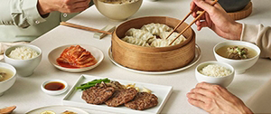
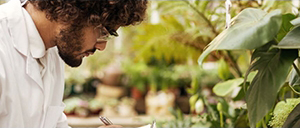

CJ제일제당은 끊임없는 도전과 혁신을 통해
글로벌식품, BIO기업으로 도약하고 있습니다
변화와 혁신의 DNA로 소비자중심경영을 실천하며, 건강, 즐거움,
편리를 창조하는 글로벌 생활문화기업으로 발전해 나가겠습니다.

세계인의 식탁에 맛있는 즐거움을 전합니다.
현지음식과 한식을 결합한 K-Food로 한국의 맛을 세계화하고,
건강하고 편리한 라이프스타일을 나누고자 합니다.

글로벌 지역사회와 함께 성장하는 세상을 만듭니다.
CJ제일제당이 가장 잘 할 수 있고 사회적 관심이 필요한 영역에서
더불어 사는 사회를 구현하고자 '국민건강 식생활증진' '지역사회의 환경생태계보존'
그리고 '청소년 꿈 실현'을 목표로 사회공헌 활동을 실천하고 있습니다.
Green Bio 기술혁신으로 글로벌 친환경시대를 열어갑니다.
자연에서 얻고 자연으로 돌려주는 기술, 지속 가능한 삶과 건강한 지구
이것이 CJ제일제당이 생각하는 BIO사업의 철학입니다.
씨제이제일제당(주) |서울특별시 중구 동호로 330 CJ 제일제당센터 (우)04560 대표자 손경식, 최은석
대표전화 02-6740-1114 사업자등록번호 104-86-09535 개인정보보호책임자 류화정 고객행복센터 080-850-1200
©2019 CJ CHEILJEDANG CORP. ALL RIGHTS RESERVED